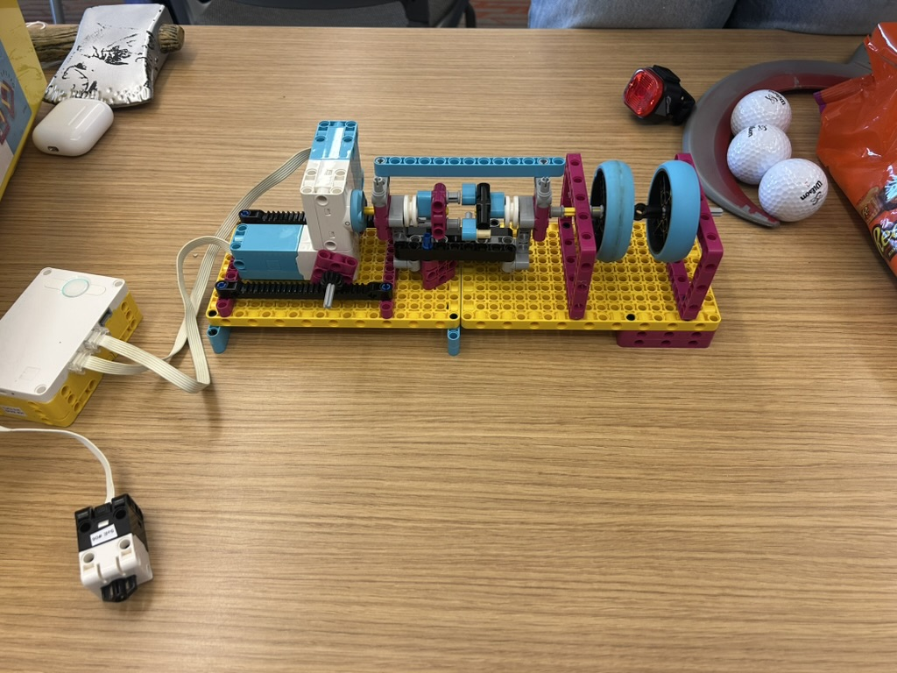

For this project, we chose the Pulley and Drops option and built a drop scare that winds an object up and then lets it fall suddenly. Our design has the object swing out as it drops, and a trap door could catch or snag it on the way out, so we used a clutch on the winding spool instead. The motor winds the string up while the clutch is engaged. When the clutch releases, the spool spins freely and the object drops right away instead of only as fast as the motor can unwind it. The clutch then re-engages so the motor can slowly wind the object back up for the next scare.